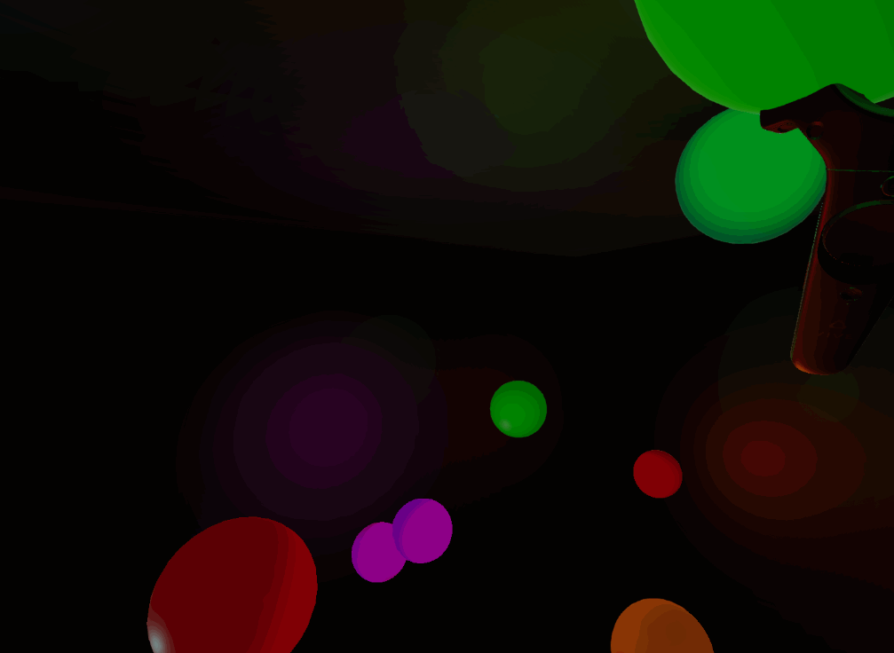
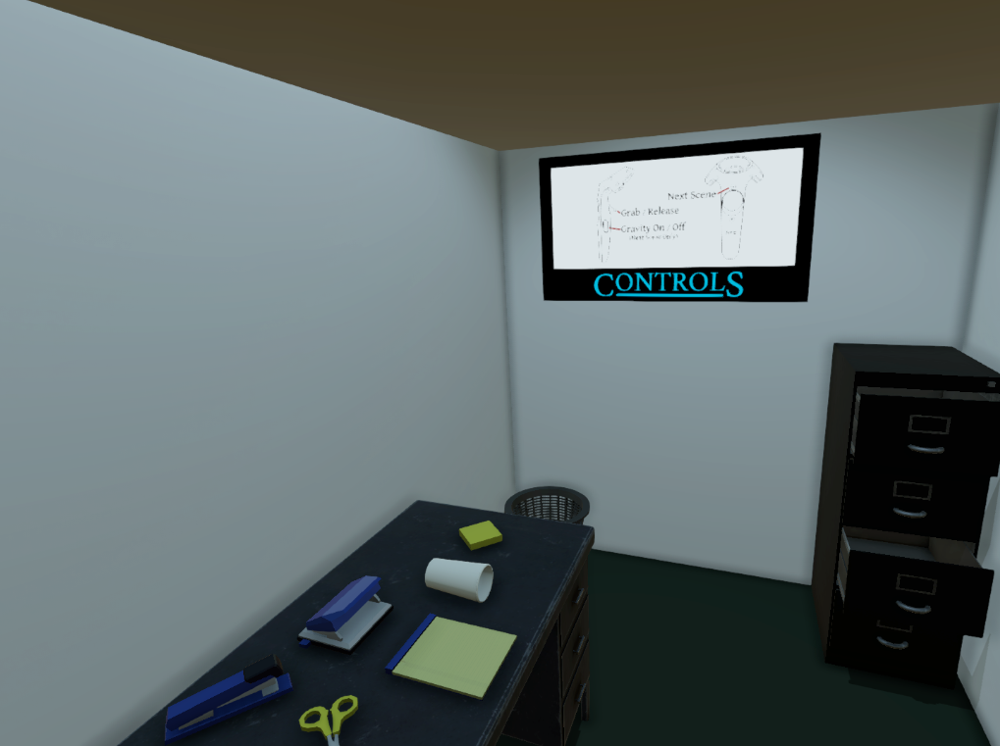
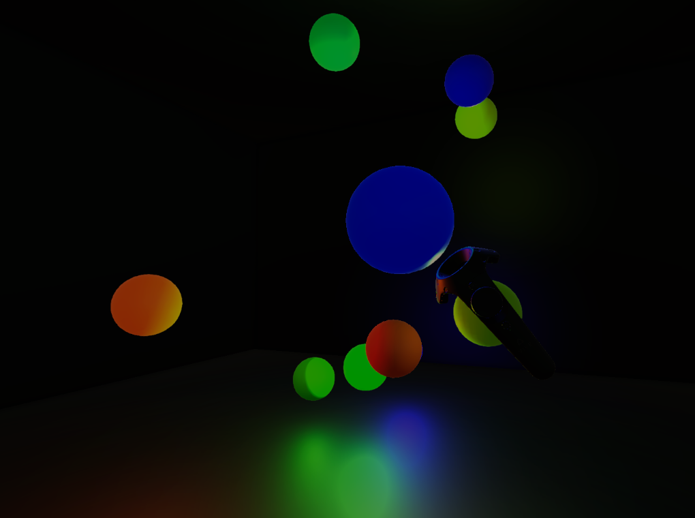

What is Throw?
Throw is a small Virtual Reality game with three very simple scenes that all involve throwing objects in some way. Each scene is a small, encapsulated experience.
 Scene 1: Office Toss it
Scene 1: Office Toss it
This first scene puts you in the middle of an office cubicle and allows you to throw common desktop items into the trash.
Once the task at hand is completed, the user is now a certified AGILE MASTER™

Scene 2: Light Room
You are now immersed in a dark room, full of dreams.
Throw your dreams and watch them bounce around in zero gravity.
You can also turn gravity on or off at will, leading to a more exciting scene.
Each time a dream collides with something, it makes a sound.
 Scene 3: Paint Ball
Scene 3: Paint Ball
Open your eyes: You find yourself in a room with white walls.
Every object in this room is also white, and placed before you is a new kind of paint.
This new paint forms solid drops of color that you can throw to coat entire surfaces.
You can even paint the light shades or TV screen, changing the ambient light in the scene.
Where are my Project Files?
The Unity Project, as well as all of the source code is available online on my github repository.
It should be fairly straightforward, as my entire aim here is to make a small project, but if you have questions feel free to contact me.
Where can you play it, right now?
You can download Throw here (HTC Vive [Room-Scale], Windows).
If you don’t have a Vive, the scenes and my development are detailed below in my post-mortem examination.
Why did I make it?
I made Throw to improve my understanding of basic Virtual Reality design concepts.
I want to take small steps forward by creating contained projects with specific goals.
This will allow me to make mistakes and learn specific Virtual Reality design principles faster.
What challenges did I face?
Using free models that I grabbed off of the internet presented a couple of challenges.
The models were not consistently scaled, and scale is something that players tend to notice, especially in VR.
After some playtesting, I got most of the objects feeling right.
The lighting in all of the scenes proved to be a challenge.
For the Light Room and Paint Ball scenes I had to adjust the ambient light in Unity to allow it to become almost completely dark.
Further, I found several lighting bugs emerged because of the default quality settings or the number of pixel lights allowed.
Several of these bugs recurred once I built the game for testing. Although it was a headache, it was also a learning experience.
The lighting in the Paint Ball scene proved to be the most challenging.
I wanted the lampshades and the TV to have emissive textures that could also change color.
I found a way to change the emission color for the light shades and the attached light sources, allowing a user to also paint the light.
Importantly, this also worked with black, setting emission to none, allowing the player to effectively ‘turn off’ the lights.
What parts am I proud of?
Office Toss It: Office Atmosphere

Every part of the environment is crafted to make the player feel surrounded.
The cubicle surrounds the player in three-space, and is intentionally cramped.
The ambient sounds of the office occur everywhere around the player, but the player doesn’t directly participate in making those sounds.
The light itself is also meant to make the player feel uncomfortable.
It flickers and provides an oppressive off-white that helps to paint the tone of the scene.
Experientially, the player is rewarded for completed the menial, pointless, and destructive act of throwing away supplies.
Light Room: Presence

In Light Room, the player has to throw the balls to actually sense the depth and dimension of the room that they occupy.
In this way, the spheres in the scene are a tool for discovering the environment.
The sounds that occur on impact also give the player an aural dimension of exploration.
Paint Ball: TV
 In Paint Ball, if the player paints the TV screen and turns out all the other lights, the TV bathes the scene in rich light.
I really enjoyed making sure that this effect would work as it reminds me of the impression I get when I watch a movie in a dark room.
In Paint Ball, if the player paints the TV screen and turns out all the other lights, the TV bathes the scene in rich light.
I really enjoyed making sure that this effect would work as it reminds me of the impression I get when I watch a movie in a dark room.
What could I improve?
General
I’ve read several interesting sites about how the velocity and angular velocity of VR controllers are tracked and the values provided in the Unity SteamVR Plugin.
With some changes, my project could include an even more accurate representation of what a player expects when throwing an object.
Light Room
In Light Room, I could make the spheres become temporarily brighter when they collide with other objects.
I think this addition would generally improve the visual experience.
Unfortunately, if a sphere bounces around really quickly, the synth sound will cut itself out, killing the feeling of suspension and reverb.
I could fix this by Pooling AudioSources on the Spheres. This would allow many sounds to play at once, blend together, and lead to a more enjoyable soundscape.
Paint Ball
When the player throws a Paint Ball at a surface the surface will instantly turn to the desired color.
However, I could improve the experience by writing an effect that makes the material change radiate outward from the point of impact, making the Paint Ball seem more liquid in nature.
I have definitely seen a similar texture effect implemented in Unity before.
What VR Verb is next?
If you’ve stuck with me this far into the article, I’d like to take a second to say thanks: Thanks.
This is one of my first public Virtual Reality projects, and I want to make many more.
I am extremely excited to keep going and push the limits of my experience.
Stick around and see what happens next.